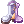

Temporal Boots
The Temporal Boots are special pairs of footgear crafted using materials collected in the Old Glast Heim memorial dungeon. The plain boots can be used as a poor man's Variant Shoes, but their true strength can be brought out with its elaborate system of upgrades.
They are also part of a combo with Faceworm Skins, Temporal Armors and the Special Enchants from Fall of Glast Heim.
Materials
Creating and modifying the boots requires 3 materials, Temporal Crystals, Coagulated Spells and Contaminated Magic. All of these can be freely traded or sold to other players.
| Image | Name | Uses | Acquired by |
|---|---|---|---|
 Temporal Crystal Temporal Crystal
|
Creating, Upgrading, Slotting, and Resetting Temporal Boots. |
Talking to NPCs after killing each MVP. 2 Crystals per Player Monster drops from the 2 MVPs at 100% chance. 1 Crystal per MVP | |
 Coagulated Spell Coagulated Spell
|
First Enchantments (Stat enchantment) | Talking to NPCs after killing each MVP. 2 Spells per Player Random Drop from all monsters in Old Glast Heim Normal Mode | |
 Contaminated Magic Contaminated Magic
|
Special Enchantments | Random Drop from all monsters in Old Glast Heim Hard Mode |
Creating Temporal Boots
Hugin's Butler can craft a pair of  +0 Temporal Boots using 1 Temporal Crystal. There is no chance of failure.
| Image | Name | Effect |
|---|---|---|

|
Temporal Boots | MHP +300, MSP +30. For every 3 refine level, MHP +100, MSP +10. |
Upgrades
The same NPC is also able to upgrade the boots if they are refined to +7. Upgrading costs 5 Temporal Crystal, and does not have a chance of failure. You will be able to choose from 6 options.
| Image | Name | Effect |
|---|---|---|
 Temporal STR Boots Temporal STR Boots
|
MHP +300, MSP +30. For every 3 refine level, MHP +100, MSP +10, ATK +7. If the user's Base STR is more than 120, ATK +50. | |
 Temporal AGI Boots Temporal AGI Boots
|
MHP +300, MSP +30. For every 3 refine level, MHP +100, MSP +10, Delay after attack -3%. If the user's Base AGI is more than 120, ASPD +1. | |
 Temporal VIT Boots Temporal VIT Boots
|
MHP +300, MSP +30. For every 3 refine level, MHP +300, MSP +10,. If the user's Base VIT is more than 120, MaxHP +8%. | |
 Temporal INT Boots Temporal INT Boots
|
MHP +300, MSP +30. For every 3 refine level, MHP +100, MSP +10, MATK +10. If the user's Base INT is more than 120, MATK +60. | |
 Temporal DEX Boots Temporal DEX Boots
|
MHP +300, MSP +30. For every 3 refine level, MHP +100, MSP +10, DEX +3. If the user's Base DEX is more than 120, Decrease Fixed Cast by -0.5s, Ranged Damage +5%. | |
 Temporal LUK Boots Temporal LUK Boots
|
MHP +300, MSP +30. For every 3 refine level, MHP +100, MSP +10, Critical Damage +2%. If the user's Base LUK is more than 120, Critical Damage +30%. |
Socketing/Slotting
All of the Upgraded Temporal Boots can be slotted. This step is completely OPTIONAL.
There are 3 ways to enchant a slot into an Upgraded Temporal Boots:
- Using 50 Coagulated Spells, this method has a LOW success chance
- Using 50 Contaminated Magic, this method has a MEDIUM success chance
- Using 10 Temporal Crystals, this method has a HIGH success chance
If you decide to slot a Temporal Stat Boots and if it is successfully slotted, its refine level will remain the same.
If you attempt slotting already enchanted Temporal Stat Boots, the NPC will tell you that all enchants will be removed upon successfull slotting. You may ignore it - all the enchants remain when you successfully slot your Temporal Stat Boots.
Nevertheless Slotting has a chance of failure. Failing will revert the boots into a +0 Temporal Boots
Enchanting
The Upgraded Temporal Boots (slotted or non-slotted) can be enchanted at Hugin's Magic Master
First Enchantment
The stat enchantment occupies the 3rd hidden slot on the Temporal Boots. This follows a linear process: once you get your desired enchant "type" at level 1 (at random), subsequent enchants will just upgrade it to the next level.
Note: While at 1st level, the enchant can be reset for 5 Temporal Crystals. The boots are not resetable in any way afterwards.
| Levels | Level 1 | Level 2 | Level 3 | Level 4 |
|---|---|---|---|---|
| Cost | 10 Coagulated Spell
|
30 Coagulated Spell
|
90 Coagulated Spell
|
270 Coagulated Spell
|
| Enchants |  Fighting Spirit 4 Fighting Spirit 4
|
 Fighting Spirit 5 Fighting Spirit 5
|
 Fighting Spirit 6 Fighting Spirit 6
|
 Fighting Spirit 7 Fighting Spirit 7
|
 Spell 2 Spell 2
|
 Spell 3 Spell 3
|
 Spell 4 Spell 4
|
 Spell 5 Spell 5
| |
 Expert Archer 1 Expert Archer 1
|
 Expert Archer 2 Expert Archer 2
|
 Expert Archer 3 Expert Archer 3
|
 Expert Archer 4 Expert Archer 4
| |
 ASPD 1 ASPD 1
|
 ASPD 2 ASPD 2
|
 ASPD 3 ASPD 3
|
 ASPD 4 ASPD 4
| |
 VIT +2 VIT +2
|
 VIT +3 VIT +3
|
 Max HP +1% Max HP +1%
|
 Max HP +2% Max HP +2%
| |
 LUK +3 LUK +3
|
 LUK +4 LUK +4
|
 LUK +5 LUK +5
|
 LUK +6 LUK +6
|
Second Enchantment
This can only be applied after the First Enchantment is upgraded to the max level. Occupies the last slot on your Temporal Boots. This enchantment costs 400 Contaminated Magic. You randomly receive one of the six enchantments below.
These enchants can combo with the accessory Special Enchants from Fall of Glast Heim.
| Image | Name | Effect |
|---|---|---|
| Bear's Might | Chance when being attacked to receive the strength of a bear,
increasing STR by 200 for 5 seconds while decreasing HP by 500 every second. | |
| Speed of Light | When attacking, has a 2% chance to increase ASPD and Perfect Dodge by 100 while draining 50 SP per second for 5 seconds. | |
| Muscular Endurance | When attacked, has a 5% chance to grant 200 VIT while draining 50 SP per second. | |
| Runaway Magic | When casting magic spells, has a 1% chance to increase INT by 200 while draining 200 SP every second for 10 seconds. | |
| Hawk Eye | When physically attacking, has a 2% chance of increasing DEX by 200 while draining 50 SP every second for 5 seconds. | |
| Lucky Day | Adds a 1% chance when receiving damage or when attacking to increase LUK by 200, and give monsters a chance to drop Treasure Box for 5 seconds. |
Recycling
The recycling can be done by talking to Hugin's Butler and bringing fully enchanted Temporal Boots.
You'll receive the following catalysts back, at random:
- 2~8 Temporal Crystal
- 50~200
 Contaminated Magic
Contaminated Magic - 50~200
 Coagulated Spell
Coagulated Spell